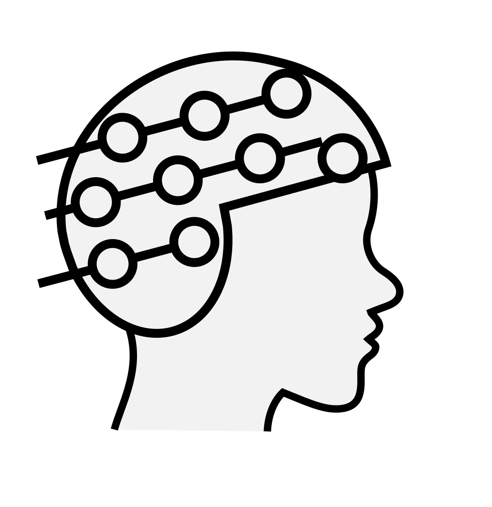
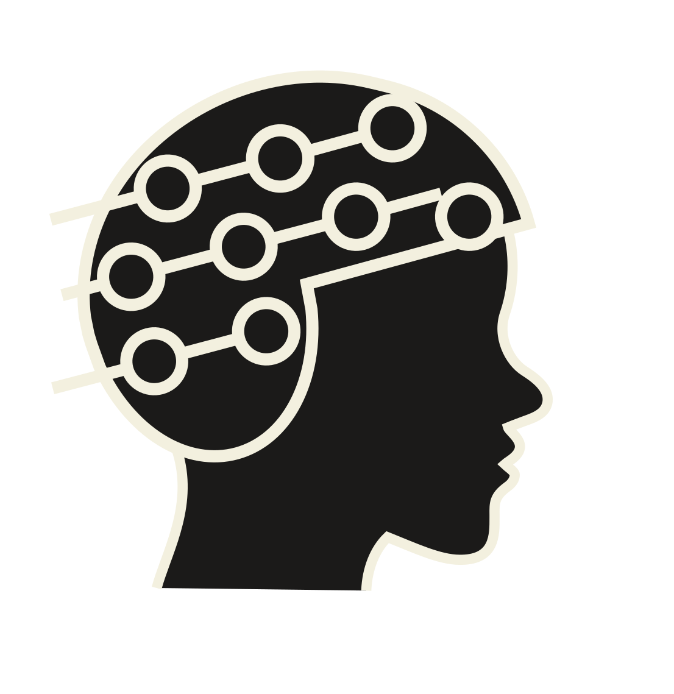
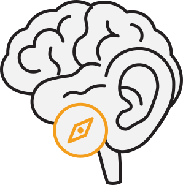
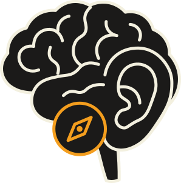
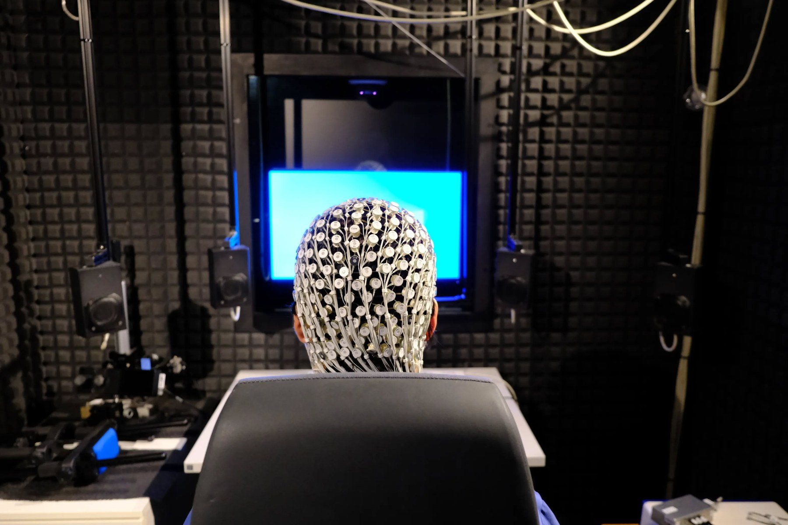

Sangyeob Baek
PhD candidate, MEG Center, University of Tübingen
Marie Skłodowska-Curie fellow, CherISH Doctoral Network
You're in a bar. Music, laughter, clinking glasses. Someone behind you calls your name, and you turn before you think.
Your brain knew where the voice came from, from differences between your two ears smaller than a millisecond. That is how it picks one voice out of the noise.
With a cochlear implant, these tiny timing cues are largely lost. The bar becomes one wall of sound: hard to tell where your name came from, and hard to follow one voice. Rehabilitation focuses on understanding speech, yet understanding speech in noise needs spatial hearing, and spatial hearing is rarely trained. Training to localize can help.
When CI users learn to localize sounds, what changes in the brain?
the voice?
the cues


Train,record EEG


What changesin the brain?
Does the brain represent sound position more sharply (encoding), or does it learn to read out the same information into a better response? I study this with audio-tactile training, loudspeakers around the listener and EEG.

Contact
- Emailsangyeob.baek@uni-tuebingen.de
- Bluesky@s-baek.bsky.social
- LinkedInSangyeob Baek
CV
- 2024–PhD, Neuroscience, University of Tübingen (IMPRS / GTC), MEG Center
Audio-tactile spatial hearing training in cochlear implant users, EEG. Supervisor: Christoph Braun - 2022–2024M.Sc. Cognitive Neuroscience, CIMeC, University of Trento
Publications
- 2026Stier C, Loose M, Loew C, Segovia-Oropeza M, Baek S, Lerche H, et al. Comprehensive evaluation of EEG spatial sampling, head modelling and parcellation effects on network alterations in idiopathic generalized epilepsy. Brain Communications 8(1), fcag022.
- 2025Greco A, Baek S, Rastelli C, Siegel M, Braun C. Robust spatial hearing beyond primary interaural cues in humans over deep neural networks. bioRxiv.
- 2023Greco A, Baek S, Middelmann T, Mehring C, Braun C, Marquetand J, et al. Discrimination of finger movements by magnetomyography with optically pumped magnetometers. Scientific Reports 13, 22157.
- 2022Semeia L, Middelmann T, Baek S, Sometti D, Chen H, Grimm A, Lerche H, et al. Optically pumped magnetometers detect altered maximal muscle activity in neuromuscular disease. Frontiers in Neuroscience 16, 1010242.
- 2021Marquetand J, Middelmann T, Dax J, Baek S, Sometti D, Grimm A, et al. Optically pumped magnetometers reveal fasciculations non-invasively. Clinical Neurophysiology 132(10), 2681–2684.
- 2021Sometti D, Semeia L, Baek S, Chen H, Righetti G, Dax J, Kronlage C, et al. Muscle fatigue revisited: insights from optically pumped magnetometers. Frontiers in Physiology 12, 724755.
- 2021Marquetand J, Dax J, Sometti D, Baek S, Kronlage C, Siegel M, Braun C, et al. Magnetomyography: new opportunities with optically pumped magnetometers. Int. J. Bioelectromagnetism 23(2), 1–4.